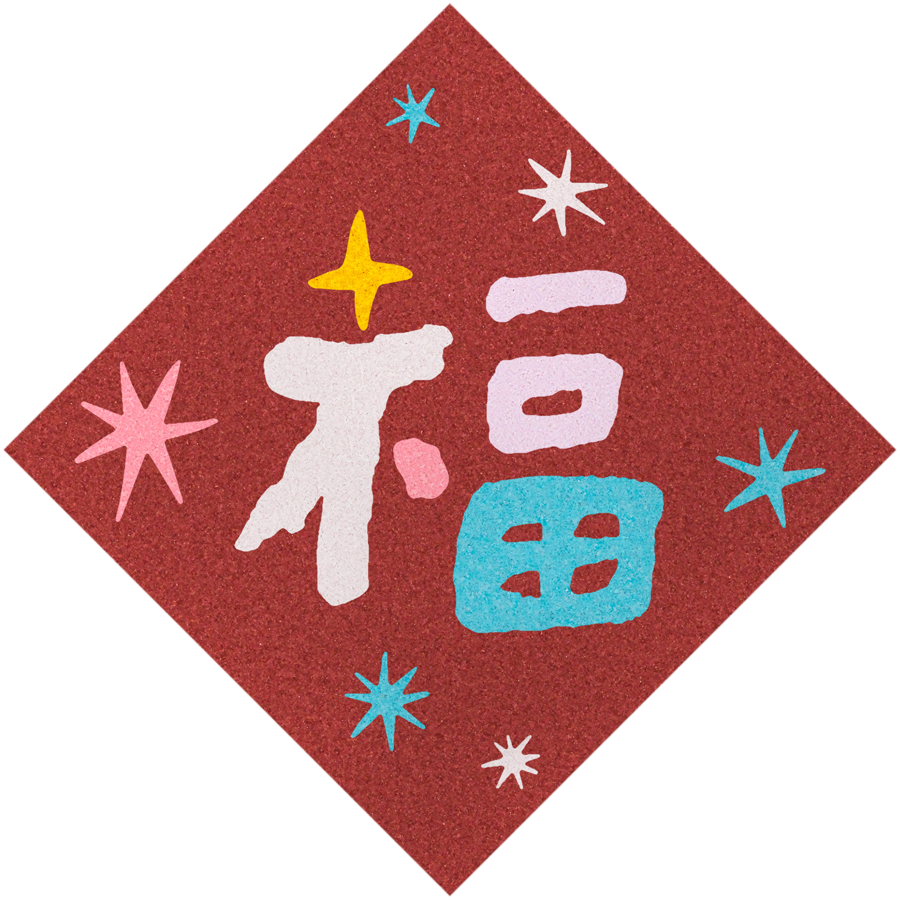
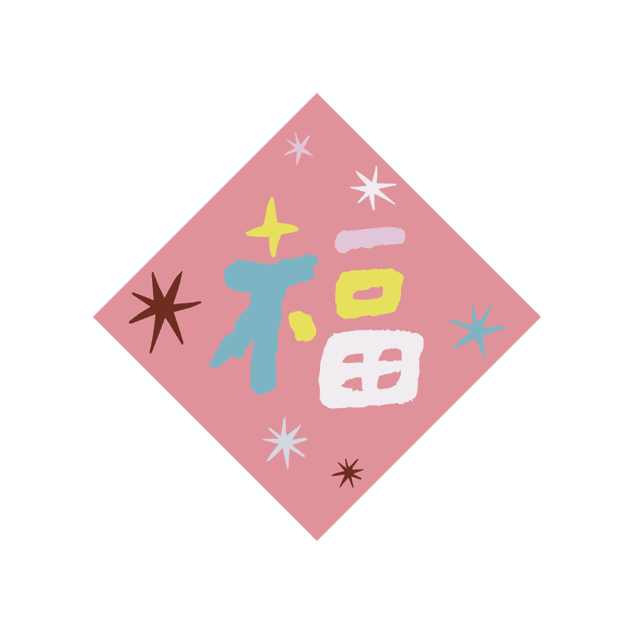
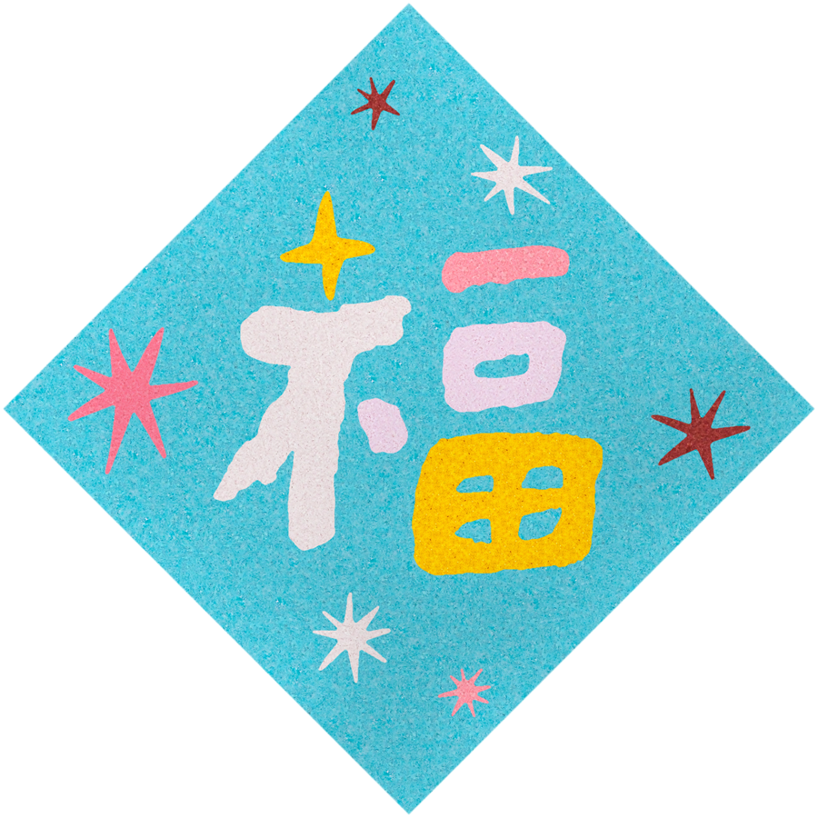
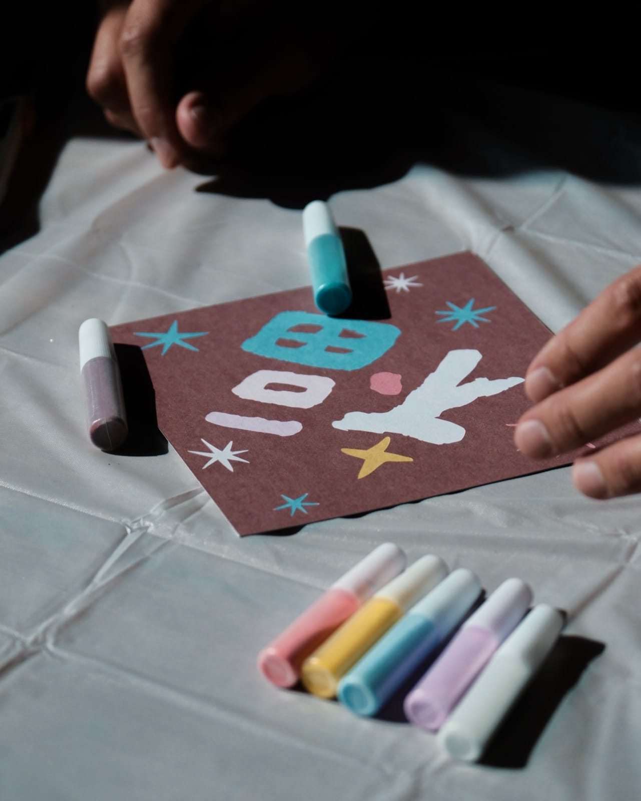
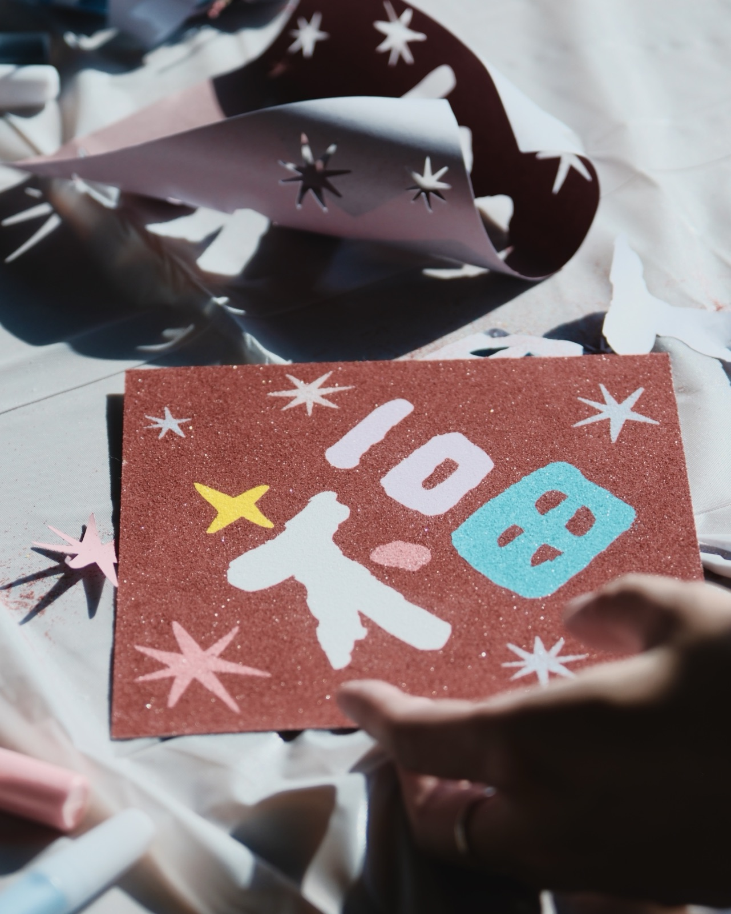
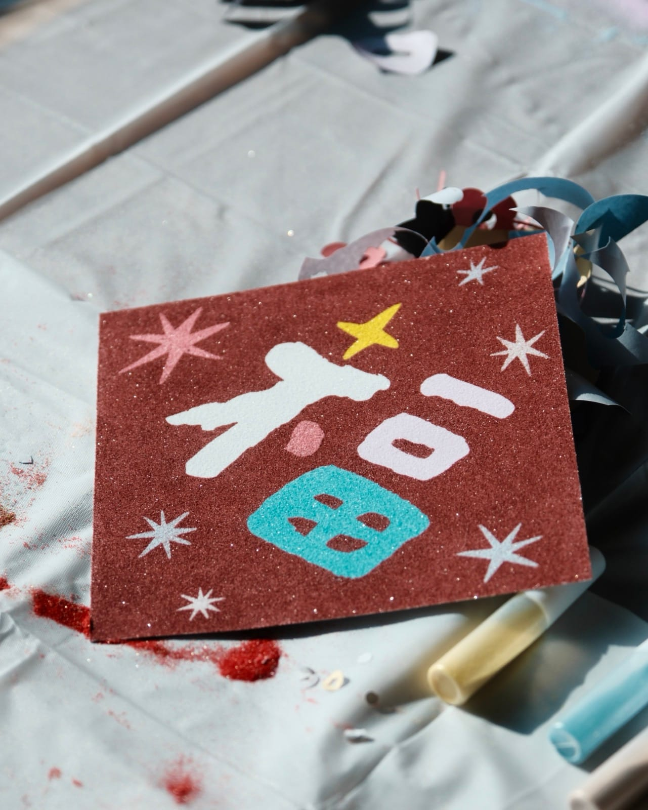
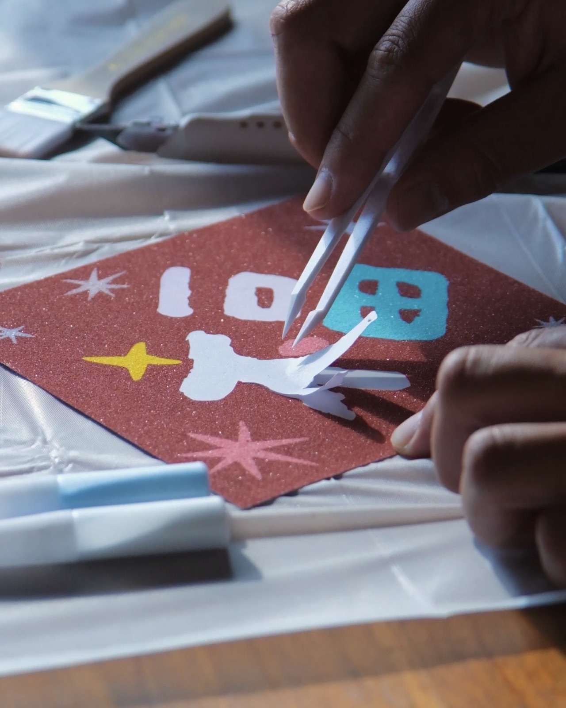
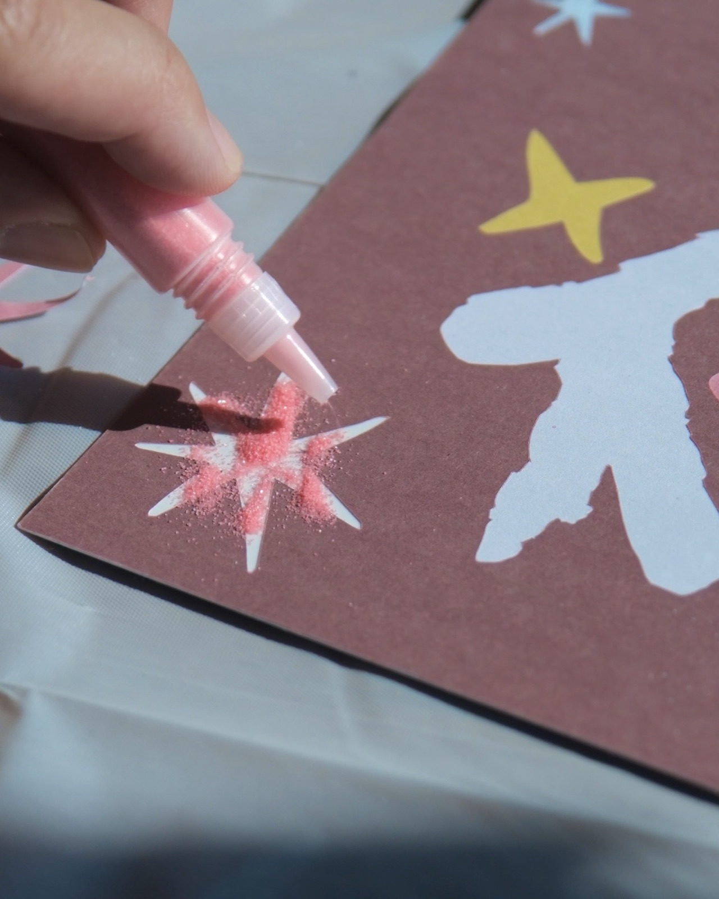
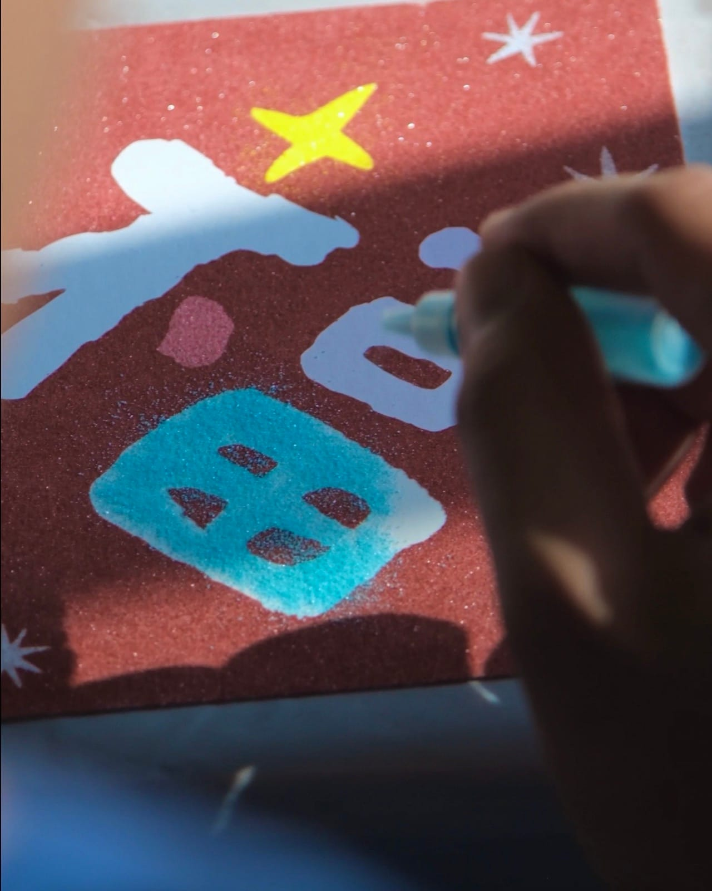
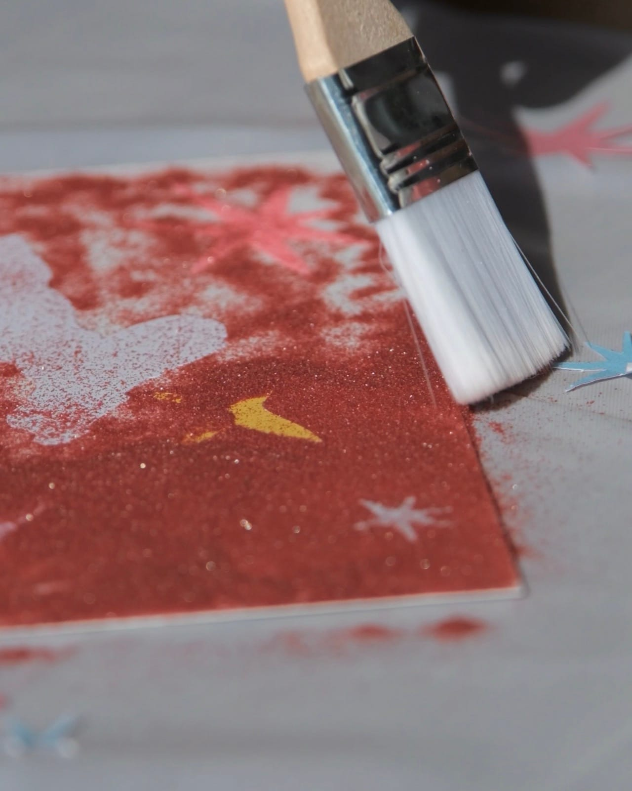

福星 Starry Fu
撕開、倒沙、鋪色，簡單技法，拼貼出陪伴一年的春聯。
12/31 00:00 前下單，材料包享 9 折優惠
$560
1
漸層沙・自選色 Gradient Sand（12 色任選）

純貼紙加購 Sticker Refill・單款
沙畫加購像框 Wood Frame（15×15cm）

商品詳細
成品尺寸：15×15cm
顏色數：7色

內附材料：
- 砂畫底板〔15×15cm〕... 1張
- 分裝沙〔7色：白色、洋黃、冰紫、粉紅、淺藍、青色、棗紅〕... 每色1管
- 排刷 ... 1支
- 夾子 ... 1支
- 一次性防污桌布 ... 1張
- 簡易步驟圖
顏色細節
- 白色
- 洋黃
- 冰紫
- 粉紅
- 淺藍
- 青色
- 棗紅
商品介紹
這次選用的配色
底色：棗紅
自由搭配：白色、洋黃、冰紫、粉紅、淺藍、青色
選用較深的棗紅作底，襯托出淺色顯色的層次，深淺對比讓每一種配色都好看，很難失敗。
白色、洋黃、冰紫、粉紅、淺藍、青色，六種顏色，不只落在星星上，也能倒進福字裡。
搭配自己的顏色
雖然我們為每一款設計都搭配了一組固定色，色塊怎麼分配、要不要混色，都可以依照自己的喜好調整搭配。就算是一樣的材料，也能做出獨一無二的作品。
我們也會陸續推出其他顏色的加購選項，可以依照需求購買。
請注意
- 幼童使用時請大人隨旁陪伴使用。
- 材料包含細小顆粒，吞嚥會有嗆入或誤食風險。
- 沙料若沾染衣物或家具，建議盡快輕拍清除，避免顆粒卡入纖維縫隙。
- 操作時建議鋪好桌布，避免沙料灑落。
- 請將材料存放在幼兒與寵物無法取得之處。
怎麼玩
由深至淺，依序完成，一格一格拼出完整的畫面。
圖案與沙子顏色雖然固定，但每個色塊要鋪哪個顏色，你可以依照喜好自由調換位置，做出獨一無二、屬於自己的版本。
包裝內附簡易圖示，跟著步驟就能完成。
適合所有年齡層，第一次接觸也能安心上手。
01撕
撕開對應色塊的貼紙，露出要鋪色的區域。
02倒
倒上對應顏色的分裝沙，蓋滿撕開的區域。
03鋪
用刷子刷勻、輕壓，讓沙粒服貼固定。
商品：春聯砂畫材料包・福星 Starry Fu
成品尺寸：15×15cm
顏色數：7色
出貨依訂購順序安排，時程將於下單頁面公告。